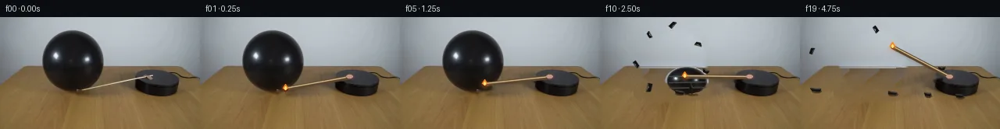

![首帧]()

Round 00
2026-11-05T03:16:54.848986+00:00像素候选变化代码 +321/−0inspection 更新
pixels 48b86cbded559f51 · code 63d54ef167777860
查看本轮 generate.py 真实 diff
--- previous/generate.py +++ current/generate.py @@ -0,0 +1,321 @@ +#!/usr/bin/env python3 +"""Generate the 20-frame PixelWorld continuation with local pixel operations.""" + +from pathlib import Path +import math + +import cv2 +import numpy as np +from PIL import Image, ImageDraw + +import artifact_io + + +ROOT = Path(__file__).resolve().parent +W, H = 256, 144 + + +def soft_mask(mask: np.ndarray, sigma: float = 1.2) -> np.ndarray: + """Return a 0..1 feathered version of an 8-bit mask.""" + k = int(max(3, 2 * round(3 * sigma) + 1)) + return cv2.GaussianBlur(mask.astype(np.float32) / 255.0, (k, k), sigma) + + +def alpha_over(base: np.ndarray, layer: np.ndarray, alpha: np.ndarray) -> np.ndarray: + a = np.clip(alpha[..., None], 0.0, 1.0) + return np.clip(base.astype(np.float32) * (1.0 - a) + layer.astype(np.float32) * a, 0, 255).astype(np.uint8) + + +def fit_surface(image: np.ndarray, selector: np.ndarray) -> np.ndarray: + """Fit a smooth quadratic RGB illumination surface to selected pixels.""" + yy, xx = np.mgrid[0:H, 0:W] + feats = np.stack( + [np.ones_like(xx), xx, yy, xx * yy, xx * xx, yy * yy], axis=-1 + ).astype(np.float64) + x = feats[selector] + result = np.zeros((H, W, 3), np.float64) + for channel in range(3): + coef, *_ = np.linalg.lstsq(x, image[..., channel][selector], rcond=None) + result[..., channel] = feats @ coef + return np.clip(result, 0, 255).astype(np.float32) + + +def make_clean_background(source: np.ndarray) -> tuple[np.ndarray, np.ndarray]: + """Remove the original balloon/shadow and match arm using local synthesis/inpaint.""" + yy, xx = np.mgrid[0:H, 0:W] + brightness = source.mean(axis=2) + + # Background regression samples avoid the balloon, puck, arm, and dark shadows. + wall_samples = (yy <= 62) & (((xx <= 45) | (xx >= 141))) & (brightness > 92) + table_samples = (yy >= 68) & (xx <= 166) & (brightness > 67) + wall_fit = fit_surface(source, wall_samples) + table_fit = fit_surface(source, table_samples) + + # Retain real low-amplitude local texture by borrowing high-frequency residuals + # from unobstructed wall and tabletop strips. + smooth = cv2.GaussianBlur(source, (0, 0), 5.0).astype(np.float32) + residual = source.astype(np.float32) - smooth + synthetic = source.astype(np.float32).copy() + horizon = 66.1 - 0.009 * xx + for y in range(8, 111): + for x in range(43, 143): + if y < horizon[y, x]: + sx = min(250, x + 103) + synthetic[y, x] = wall_fit[y, x] + 0.55 * residual[y, sx] + else: + # A repeating source strip is acceptable here because only its + # subtle high-pass grain is used over a separately fitted color field. + sx = 3 + ((x - 43) % 39) + sy = min(139, max(69, y + ((x // 39) % 3) - 1)) + synthetic[y, x] = table_fit[y, x] + 0.75 * residual[sy, sx] + synthetic = np.clip(synthetic, 0, 255).astype(np.uint8) + + balloon_mask = np.zeros((H, W), np.uint8) + cv2.ellipse(balloon_mask, (93, 57), (43, 42), 0, 0, 360, 255, -1, cv2.LINE_AA) + cv2.fillConvexPoly( + balloon_mask, + np.array([(92, 86), (111, 87), (115, 99), (100, 101), (88, 94)], np.int32), + 255, + cv2.LINE_AA, + ) + # Remove the broad balloon cast/contact shadow from the table too. + cv2.ellipse(balloon_mask, (93, 96), (51, 13), -2, 0, 360, 255, -1, cv2.LINE_AA) + balloon_alpha = soft_mask(balloon_mask, 1.25) + without_balloon = alpha_over(source, synthetic, balloon_alpha) + + arm_mask = np.zeros((H, W), np.uint8) + cv2.line(arm_mask, (102, 97), (198, 73), 255, 5, cv2.LINE_AA) … diff truncated; 234 more lines …